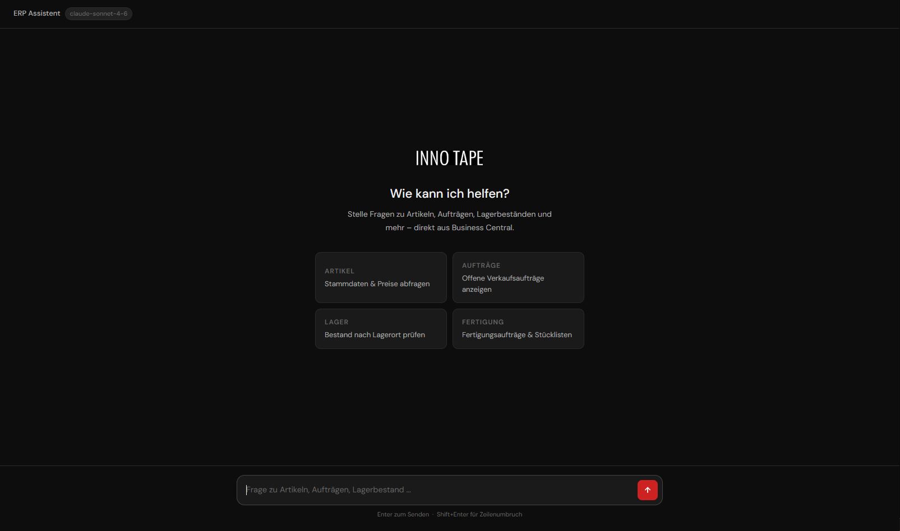
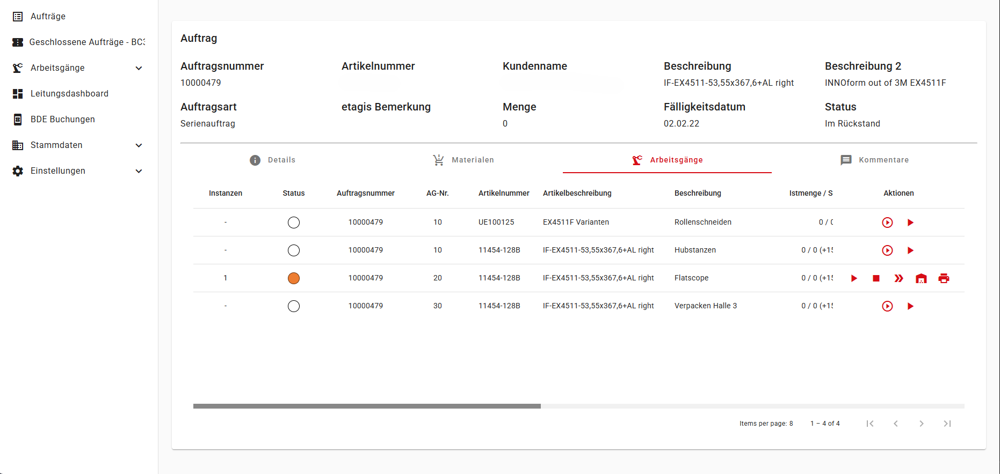
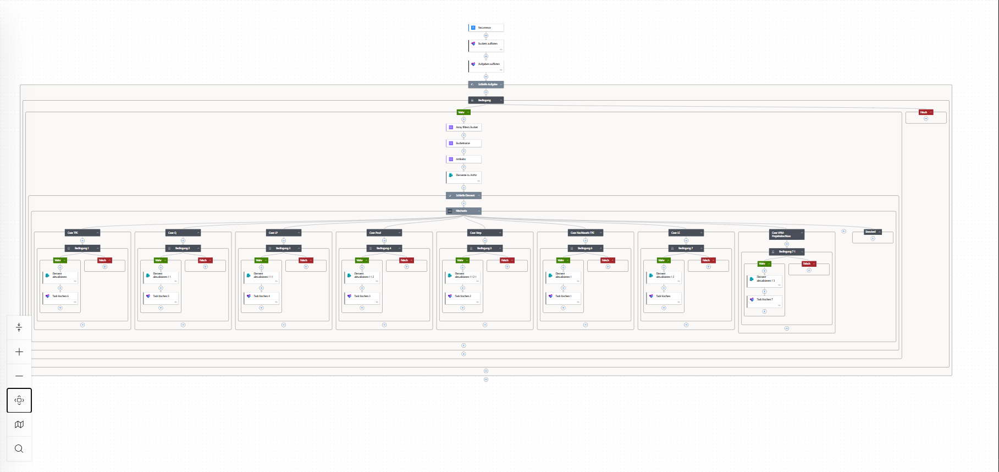

Hi, ich bin Marcel Wulfhorst!
Ein Prozessentwickler, Digitalisierer und Programmierer. Bei INNO TAPE entwickle ich digitale Lösungen für die Prozessoptimierung und -automatisierung. Als Projektentwickler präge ich die Prozessvision und setze diese in die Praxis um. Aber hinter mir steckt so viel mehr als nur die Arbeit. Ich bin ein kreativer Kopf, der gerne neue Ideen entwickelt und umsetzt. Scrolle nach unten und lerne mich kennen.
Aktuell erweitere ich meine Fertigkeiten und Kenntnisse im Bereich der Programmierung.
Ich habe bereits einige Softwarelösungen umgesetzt, weshalb meine praktische Erfahrung gepaart mit der theoretischen Lernerfahrung mich dazu befähigt, innovative und prozessoptimierende Lösungen zielgerichtet und eigenständig zu realisieren.
Seit über 15 Jahren bin ich in dem Bereichen Produktion und Digitalisierung tätig.
Als Entwickler habe ich gemeinsam mit Kollegen und Kunden interaktive Erlebnisse und Inhalte für etablierte Automobilhersteller und -Zulieferer entwickelt.
Projekt Portfolio

ERP-Chatbot
2026
Integration eines KI-Chatbots in das ERP-System Microsoft Dynamics BC365 (BC14).

BDE
2025
Einführung einer Betriebsdatenerfassung (BDE) zur Optimierung des Produktionsprozesses.

Auftragsabwicklung
2026
Digitalisierung und Automatisierung der Auftragsabwicklung von der Bestellung bis zum Versand mit Power Automate.

Dynamics 365 BC / NAV
2022
Einführung von Microsoft Dynamics NAV zur Digitalisierung der Produktionsprozesse.
Berufserfahrung
Projekt- und Entwicklungsingenieur
INNO TAPE GmbH
Oktober 2019 - heute
Teamleitung Prozessentwicklung
INNO TAPE GmbH
Oktober 2017 – September 2020
Teamleitung Produktionstechnik
INNO TAPE GmbH
August 2014 – September 2017